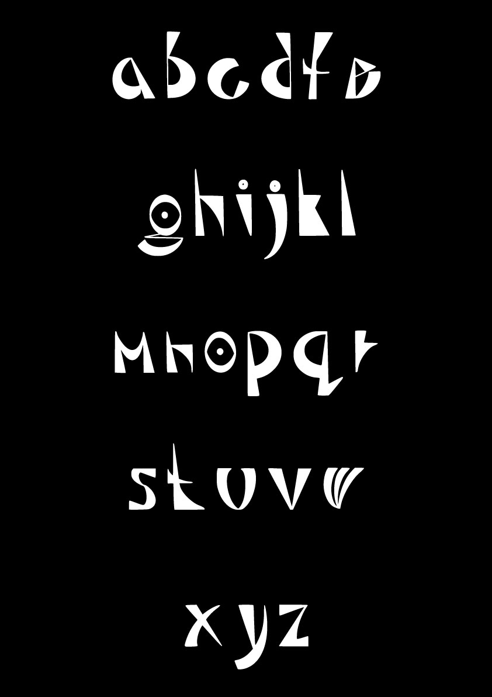
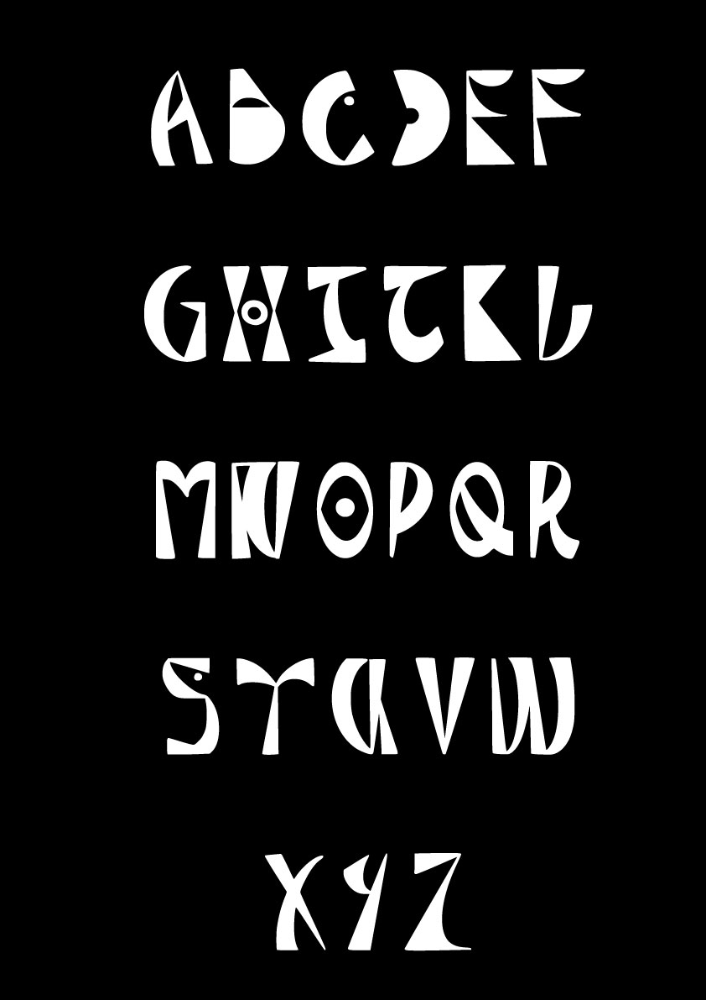
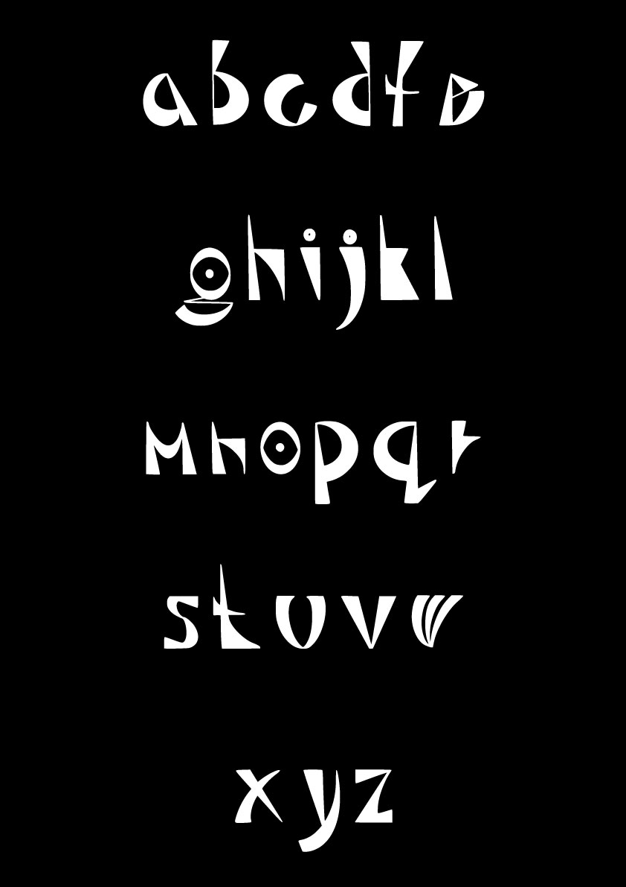
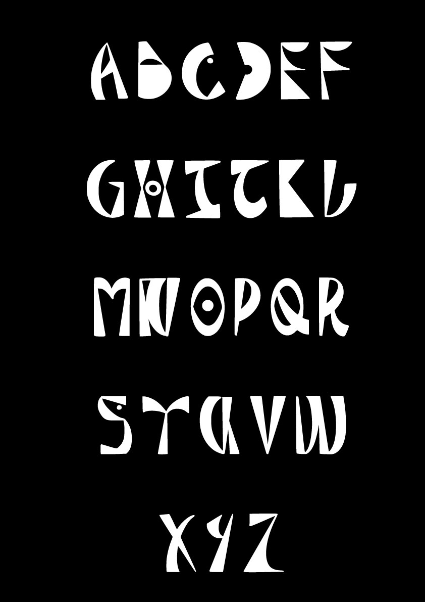
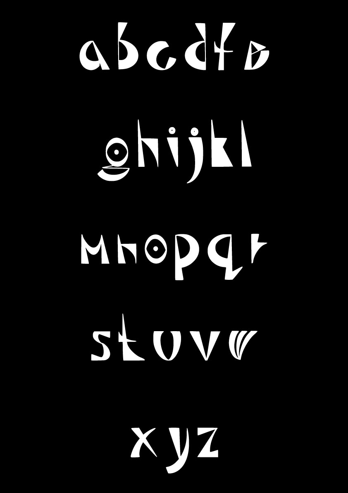
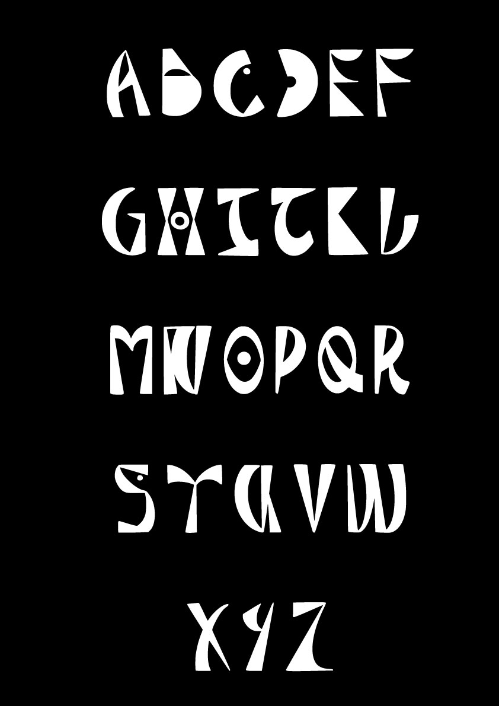
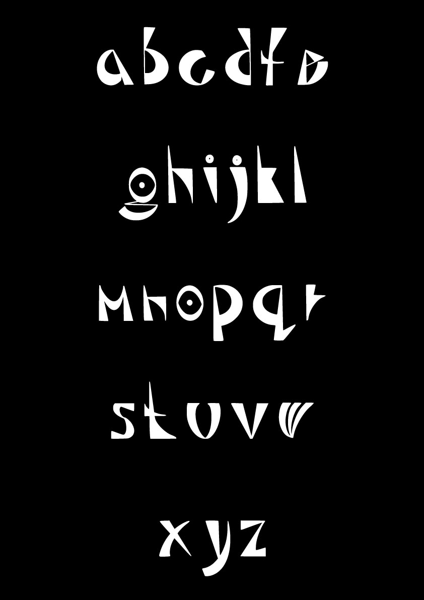
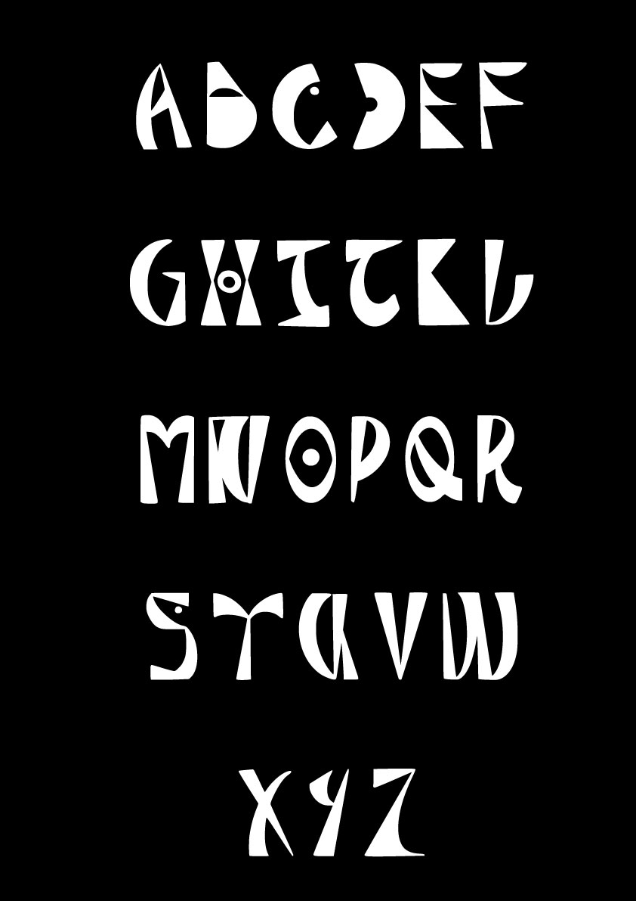

 



This typeface was inspired by the book 'Afrikan Alphabets: The Story of Writing in Afrika' which Saki Mafundikwa wrote. In this book, Mafundikwa shows the different African writing systems that were hidden away from use and not mansion in the graphic design history books. Because of this, he encourages designs to use our African heritage to create something culturally relevant. So I have created this typeface based on my roots which is Ghana. To showcase this, I have made an interactive book which can only be viewed on the book app on mac showing the limitations feeling of African culture designs. The book included illustrations made up of the African writing systems as well as the typeface that I've created. As for the cover and backgrounds, I used the colours of the Ghana flag as it has a deeper meaning to it. ‘Red represents the blood of those who died in the country's struggle for independence. Gold represents the mineral wealth of the country. Green symbolises the country's rich forests. The Black Star stands for the lodestar of African Freedom’. As the book is interactive, click on the download button below to get the full experience.
2021